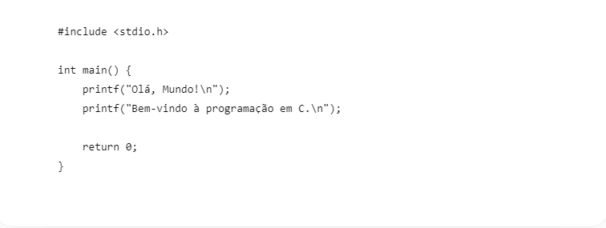
Explicação:
#include
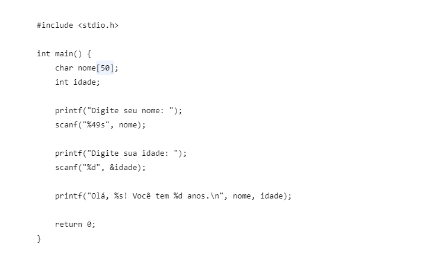
Explicação: char nome[50] cria uma variável para guardar o nome. int idade cria uma variável para guardar a idade como número inteiro. scanf() recebe informações digitadas pelo usuário. %s é usado para texto e %d para números inteiros. &idade indica o endereço onde o valor da idade será armazenado. No caso do nome, não usamos & porque o nome já funciona como endereço do primeiro elemento do vetor.
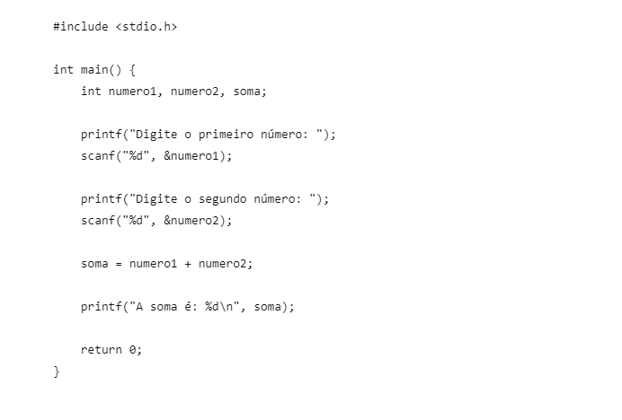
Explicação: Criamos três variáveis inteiras: numero1, numero2 e soma. Depois usamos scanf() para receber os dois números. soma = numero1 + numero2; realiza a soma e guarda o resultado na variável soma. Por fim, printf() mostra o resultado.
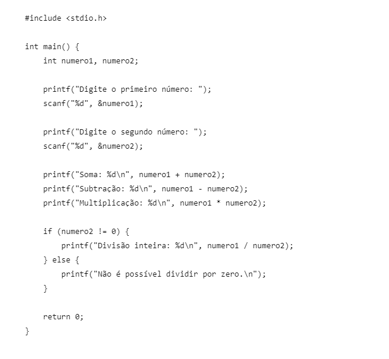
Explicação: + faz a soma, - faz a subtração e * faz a multiplicação. A / realiza a divisão inteira porque estamos usando variáveis int. Por exemplo, 7 / 2 resulta em 3. O if verifica se o segundo número é diferente de zero antes de realizar a divisão, evitando uma divisão por zero.
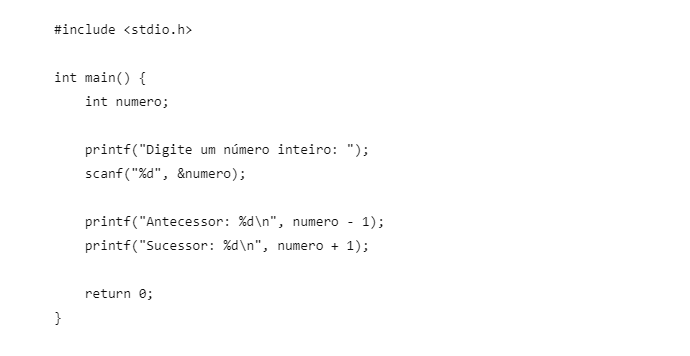
Explicação: O antecessor é o número anterior, então fazemos numero - 1. O sucessor é o número seguinte, então fazemos numero + 1. Por exemplo, se o usuário digitar 10, o antecessor será 9 e o sucessor será 11.
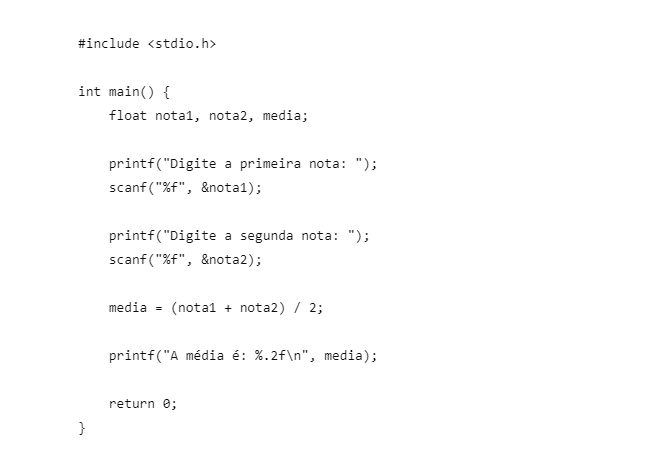
Explicação: Usamos float porque as notas podem ter casas decimais. A média é calculada somando as duas notas e dividindo por 2. %.2f mostra o resultado com duas casas decimais.
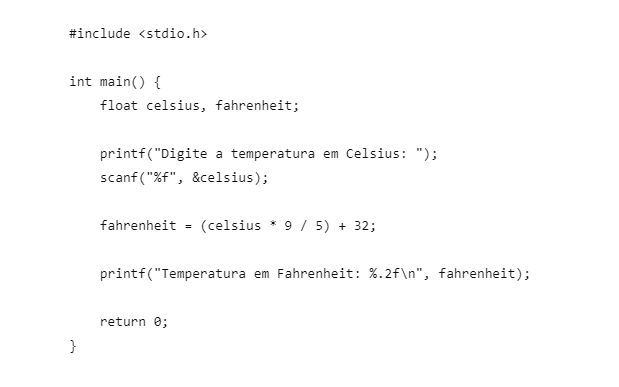
Explicação: Primeiro criamos duas variáveis float: uma para Celsius e outra para Fahrenheit. Depois aplicamos a fórmula: F = (C * 9 / 5) + 32 O resultado é armazenado em fahrenheit e mostrado na tela.
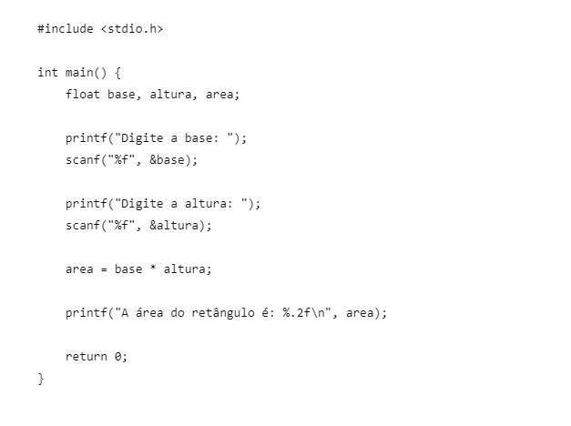
Explicação: Para calcular a área de um retângulo usamos: Área = base × altura Por isso, fazemos area = base * altura. Usamos float para permitir valores com casas decimais.
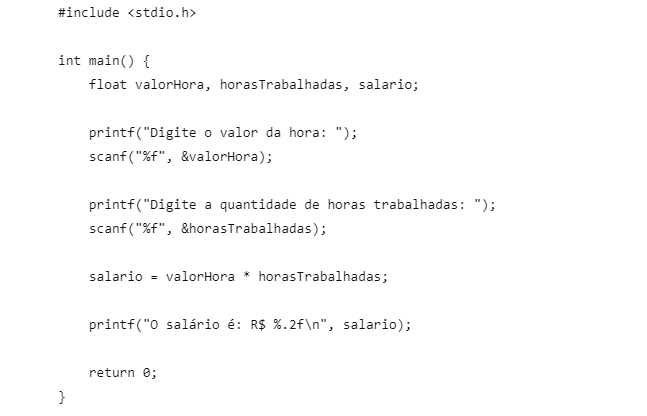
Explicação: O programa recebe o valor que a pessoa ganha por hora e a quantidade de horas trabalhadas. Depois multiplicamos os dois valores: salario = valorHora * horasTrabalhadas O %.2f deixa o salário com duas casas decimais.
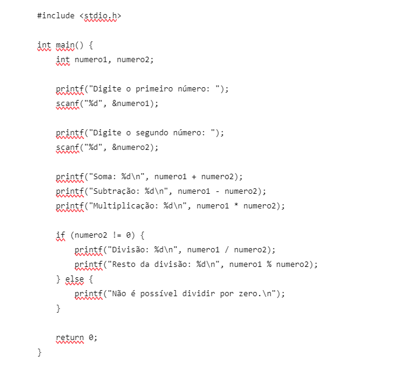
Explicação: O programa realiza as quatro operações solicitadas. O símbolo % representa o resto da divisão. Por exemplo, 10 % 3 resulta em 1. Assim como na atividade anterior, verificamos se o segundo número é diferente de zero antes de fazer a divisão.
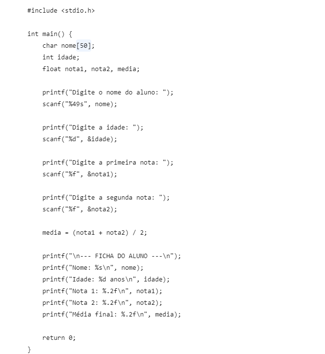
Explicação: Nesse desafio juntamos vários conceitos das atividades anteriores. char nome[50] guarda o nome, int idade guarda a idade e float guarda as notas e a média. A média é calculada com (nota1 + nota2) / 2. Depois, vários printf() são usados para montar uma ficha do aluno e mostrar todas as informações na tela.